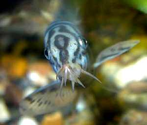

Мраморная боция
Боция независимая и наглая (смелая). Себя в обиду не даёт. По характеру похожа на лабео , но не агрессивна. По моему опыту, боция уживается с достаточно злыми цихлидами, вроде ауратуса.
Боция относится к вьюнам, как, например, акантофтальмус. Есть аквариумисты, которые держат только вьюнов.
Боция ведёт раскопки

Портрет